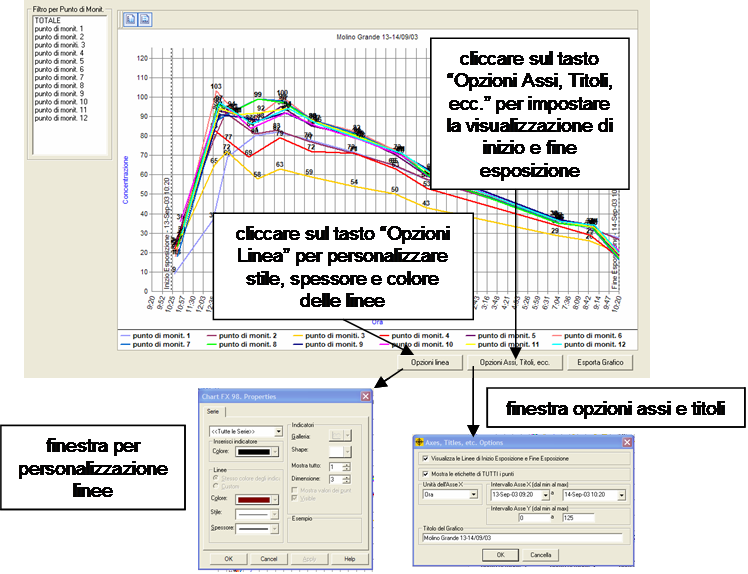
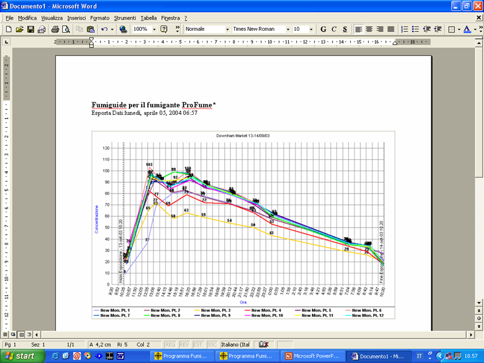

Tab Grafico
Il tab Grafico
consente agli utenti di creare un diagramma dell’andamento della concentrazione di ProFume (asse verticale) in relazione al Periodo di Esposizione (asse orizzontale). L’utente può impostare l’Inizio e la Fine Esposizione, l’Orario o il Tempo Trascorso. E’ possibile variare l’aspetto dei Punti di Monitoraggio modificando Colore, Tipo e Dimensioni di Linee e Indicatori.
Fumiguide inserisce di default nel
grafico i dati relativi a tutti i punti di monitoraggio. E’ però possibile utilizzare filtri per visualizzare nel grafico solamente uno o alcuni Punti di Monitoraggio.
Il grafico
elabora la Concentrazione (asse y) in relazione all’Ora oppure al Tempo Trascorso (asse x). L’asse y prevede un intervallo di valori da 0 fino alla concentrazione massima iniziale per le Aree sottoposte a fumigazione. L’asse x prevede un intervallo di valori compresi tra il tempo di Inizio Erogazione e quello di Fine Esposizione.
Nota: il modificare i tempi di Inizio Esposizione o Fine Esposizione direttamente nel tab Grafico non impatta sui calcoli di Fumiguide degli altri tab. Per cambiare il Periodo di Esposizione su cui si basano i calcoli del dosaggio, l’utente deve modificare l’Inizio Esposizione o Fine Esposizione nei tab Dati di Monitoraggio o Stato del Monitoraggio.

Gli utenti hanno la possibilità di modificare l’intervallo dell’asse x e dell’asse y e di impostare le unità dell’asse x in base all’Orario (8:35) o al Tempo Trascorso (16 ore), nonché di mostrare o nascondere le linee verticali tratteggiate indicanti l’Inizio Esposizione e la Fine Esposizione.
Le Opzioni Linea impostate dall’utente vengono salvate nel data-base e comprendono il titolo, il colore dello sfondo del grafico, le unità dell’asse x (orario o tempo trascorso), i gli indicatori delle linee, l’intervallo dell’asse x e dell’asse y.
Cliccando sul tasto Esporta Grafico, ProFume Fumiguide esporta il grafico in un nuovo documento MS-Word dove, se lo si desidera, è possibile inserire informazioni aggiuntive. Ultimate le annotazioni, il documento MS-Word contenente uno o più grafici più essere salvato un una specifica cartella del proprio computer.

*Marchio
registrato di Dow AgroSciences LLC